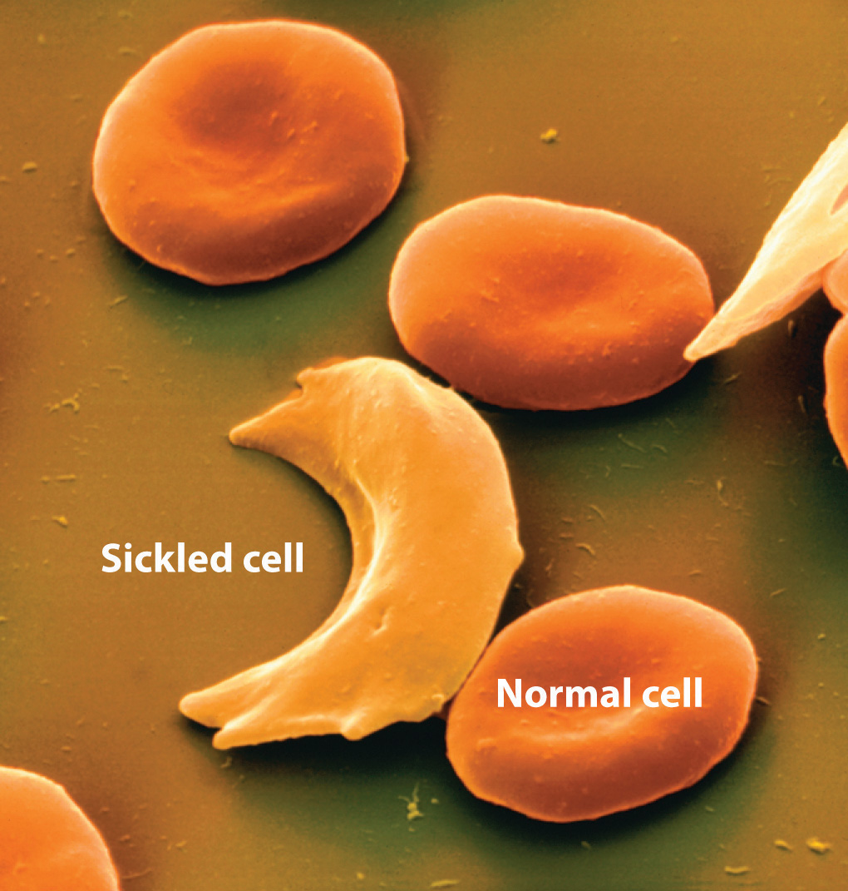
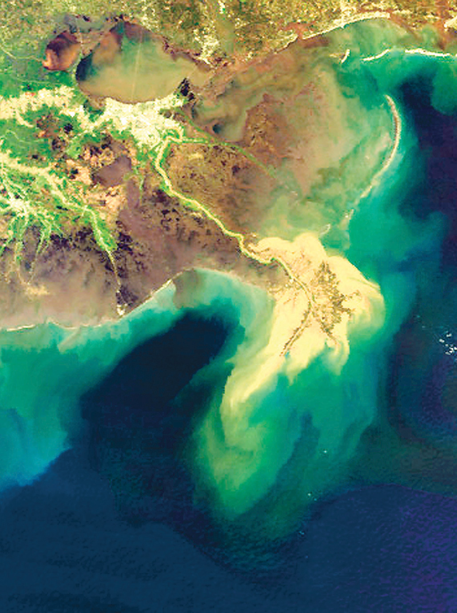
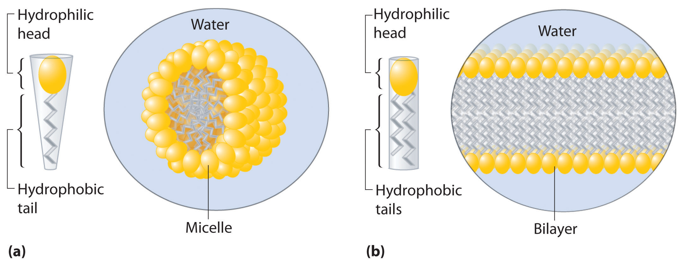

Suspensions and colloids are two common types of mixtures whose properties are in many ways intermediate between those of true solutions and heterogeneous mixtures. A suspensionA heterogeneous mixture of particles with diameters of about 1 µm that are distributed throughout a second phase and that separate from the dispersing phase on standing. is a heterogeneous mixture of particles with diameters of about 1 µm (1000 nm) that are distributed throughout a second phase. Common suspensions include paint, blood, and hot chocolate, which are solid particles in a liquid, and aerosol sprays, which are liquid particles in a gas. If the suspension is allowed to stand, the two phases will separate, which is why paints must be thoroughly stirred or shaken before use. A colloidA heterogeneous mixture of particles with diameters of about 2–500 nm that are distributed throughout a second phase and do not separate from the dispersing phase on standing. is also a heterogeneous mixture, but the particles of a colloid are typically smaller than those of a suspension, generally in the range of 2 to about 500 nm in diameter. Colloids include fog and clouds (liquid particles in a gas), milk (solid particles in a liquid), and butter (solid particles in a solid). Other colloids are used industrially as catalysts. Unlike in a suspension, the particles in a colloid do not separate into two phases on standing. The only combination of substances that cannot produce a suspension or a colloid is a mixture of two gases because their particles are so small that they always form true solutions. The properties of suspensions, colloids, and solutions are summarized in Table 13.9 "Properties of Liquid Solutions, Colloids, and Suspensions".
Table 13.9 Properties of Liquid Solutions, Colloids, and Suspensions
| Type of Mixture | Approximate Size of Particles (nm) | Characteristic Properties | Examples |
|---|---|---|---|
| solution | < 2 | not filterable; does not separate on standing; does not scatter visible light | air, white wine, gasoline, salt water |
| colloid | 2–500 | scatters visible light; translucent or opaque; not filterable; does not separate on standing | smoke, fog, ink, milk, butter, cheese |
| suspension | 500–1000 | cloudy or opaque; filterable; separates on standing | muddy water, hot cocoa, blood, paint |
Colloids were first characterized in about 1860 by Thomas Graham, who also gave us Graham’s law of diffusion and effusion. Although some substances, such as starch, gelatin, and glue, appear to dissolve in water to produce solutions, Graham found that they diffuse very slowly or not at all compared with solutions of substances such as salt and sugar. Graham coined the word colloid (from the Greek kólla, meaning “glue”) to describe these substances, as well as the words solA dispersion of solid particles in a liquid or solid. and gelA semisolid sol in which all of the liquid phase has been absorbed by the solid particles. to describe certain types of colloids in which all of the solvent has been absorbed by the solid particles, thus preventing the mixture from flowing readily, as we see in Jell-O. Two other important types of colloids are aerosolsA dispersion of solid or liquid particles in a gas., which are dispersions of solid or liquid particles in a gas, and emulsions, which are dispersions of one liquid in another liquid with which it is immiscible.
Colloids share many properties with solutions. For example, the particles in both are invisible without a powerful microscope, do not settle on standing, and pass through most filters. However, the particles in a colloid scatter a beam of visible light, a phenomenon known as the Tyndall effectThe phenomenon of scattering a beam of visible light.,The effect is named after its discoverer, John Tyndall, an English physicist (1820–1893). whereas the particles of a solution do not. The Tyndall effect is responsible for the way the beams from automobile headlights are clearly visible from the side on a foggy night but cannot be seen from the side on a clear night. It is also responsible for the colored rays of light seen in many sunsets, where the sun’s light is scattered by water droplets and dust particles high in the atmosphere. An example of the Tyndall effect is shown in Figure 13.22 "Tyndall Effect, the Scattering of Light by Colloids".
Figure 13.22 Tyndall Effect, the Scattering of Light by Colloids

Both cylinders contain a solution of red food coloring in water, but a small amount of gelatin has been added to the cylinder on the right to form a colloidal suspension of gelatin particles. The beam of light goes straight through the true solution on the left, but the light beam is scattered by the colloid on the right.
Although colloids and suspensions can have particles similar in size, the two differ in stability: the particles of a colloid remain dispersed indefinitely unless the temperature or chemical composition of the dispersing medium is changed. The chemical explanation for the stability of colloids depends on whether the colloidal particles are hydrophilic or hydrophobic.
Most proteins, including those responsible for the properties of gelatin and glue, are hydrophilic because their exterior surface is largely covered with polar or charged groups. Starch, a long-branched polymer of glucose molecules, is also hydrophilic. A hydrophilic colloid particle interacts strongly with water, resulting in a shell of tightly bound water molecules that prevents the particles from aggregating when they collide. Heating such a colloid can cause aggregation because the particles collide with greater energy and disrupt the protective shell of solvent. Moreover, heat causes protein structures to unfold, exposing previously buried hydrophobic groups that can now interact with other hydrophobic groups and cause the particles to aggregate and precipitate from solution. When an egg is boiled, for example, the egg white, which is primarily a colloidal suspension of a protein called albumin, unfolds and exposes its hydrophobic groups, which aggregate and cause the albumin to precipitate as a white solid.
In some cases, a stable colloid can be transformed to an aggregated suspension by a minor chemical modification. Consider, for example, the behavior of hemoglobin, a major component of red blood cells. Hemoglobin molecules normally form a colloidal suspension inside red blood cells, which typically have a “donut” shape and are easily deformed, allowing them to squeeze through the capillaries to deliver oxygen to tissues. In a common inherited disease called sickle-cell anemia, one of the amino acids in hemoglobin that has a hydrophilic carboxylic acid side chain (glutamate) is replaced by another amino acid that has a hydrophobic side chain (valine, Figure 5.16 "The Structures of 10 Amino Acids"). Under some conditions, the abnormal hemoglobin molecules can aggregate to form long, rigid fibers that cause the red blood cells to deform, adopting a characteristic sickle shape that prevents them from passing through the capillaries (Figure 13.23 "Sickle-Cell Anemia"). The reduction in blood flow results in severe cramps, swollen joints, and liver damage. Until recently, many patients with sickle-cell anemia died before the age of 30 from infection, blood clots, or heart or kidney failure, although individuals with the sickle-cell genetic trait are more resistant to malaria than are those with “normal” hemoglobin.
Figure 13.23 Sickle-Cell Anemia
The characteristic shape of sickled red blood cells is the result of fibrous aggregation of hemoglobin molecules inside the cell.
Figure 13.24 Formation of New Land by the Destabilization of a Colloid Suspension
This satellite photograph shows the Mississippi River delta from New Orleans (top) to the Gulf of Mexico (bottom). Where seawater mixes with freshwater from the Mississippi River, colloidal clay particles in the river water precipitate (tan area).
Aggregation and precipitation can also result when the outer, charged layer of a particle is neutralized by ions with the opposite charge. In inland waterways, clay particles, which have a charged surface, form a colloidal suspension. High salt concentrations in seawater neutralize the charge on the particles, causing them to precipitate and form land at the mouths of large rivers, as seen in the satellite view in Figure 13.24 "Formation of New Land by the Destabilization of a Colloid Suspension". Charge neutralization is also an important strategy for precipitating solid particles from gaseous colloids such as smoke, and it is widely used to reduce particulate emissions from power plants that burn fossil fuels.
EmulsionsA dispersion of one liquid phase in another liquid with which it is immiscible. are colloids formed by the dispersion of a hydrophobic liquid in water, thereby bringing two mutually insoluble liquids, such as oil and water, in close contact. Various agents have been developed to stabilize emulsions, the most successful being molecules that combine a relatively long hydrophobic “tail” with a hydrophilic “head”:
Examples of such emulsifying agents include soaps, which are salts of long-chain carboxylic acids, such as sodium stearate [CH3(CH2)16CO2−Na+], and detergents, such as sodium dodecyl sulfate [CH3(CH2)11OSO3−Na+], whose structures are as follows:
When you wash your laundry, the hydrophobic tails of soaps and detergents interact with hydrophobic particles of dirt or grease through dispersion forces, dissolving in the interior of the hydrophobic particle. The hydrophilic group is then exposed at the surface of the particle, which enables it to interact with water through ion–dipole forces and hydrogen bonding. This causes the particles of dirt or grease to disperse in the wash water and allows them to be removed by rinsing. Similar agents are used in the food industry to stabilize emulsions such as mayonnaise.
A related mechanism allows us to absorb and digest the fats in buttered popcorn and French fries. To solubilize the fats so that they can be absorbed, the gall bladder secretes a fluid called bile into the small intestine. Bile contains a variety of bile salts, detergent-like molecules that emulsify the fats.
Detergents and soaps are surprisingly soluble in water in spite of their hydrophobic tails. The reason for their solubility is that they do not, in fact, form simple solutions. Instead, above a certain concentration they spontaneously form micellesA spherical or cylindrical aggregate of detergents or soaps in water that minimizes contact between the hydrophobic tails of the detergents or soaps and water., which are spherical or cylindrical aggregates that minimize contact between the hydrophobic tails and water. In a micelle, only the hydrophilic heads are in direct contact with water, and the hydrophobic tails are in the interior of the aggregate (part (a) in Figure 13.25 "Micelles and a Phospholipid Bilayer").
Figure 13.25 Micelles and a Phospholipid Bilayer
(a) Soaps and detergents, which contain a single hydrophobic tail on each molecule, form spherical micelles with the intertwined tails in the interior and the hydrophilic head groups on the exterior. (b) Phospholipids, which have two hydrophobic tails, tend to form extended double layers in which the hydrophobic tails are sandwiched between the hydrophilic head groups.
A large class of biological molecules called phospholipidsA large class of biological, detergent-like molecules that have a hydrophilic head and two hydrophobic tails and that form bilayers. consists of detergent-like molecules with a hydrophilic head and two hydrophobic tails, as can be seen in the molecule of phosphatidylcholine. The additional tail results in a cylindrical shape that prevents phospholipids from forming a spherical micelle. Consequently, phospholipids form bilayersA two-dimensional sheet consisting of a double layer of phospholipid molecules arranged tail to tail., extended sheets consisting of a double layer of molecules. As shown in part (b) in Figure 13.25 "Micelles and a Phospholipid Bilayer", the hydrophobic tails are in the center of the bilayer, where they are not in contact with water, and the hydrophilic heads are on the two surfaces, in contact with the surrounding aqueous solution.
A cell membraneA mixture of phospholipids that form a phospholipid bilayer around the cell. is essentially a mixture of phospholipids that form a phospholipid bilayer. One definition of a cellA collection of molecules, capable of reproducing itself, that is surrounded by a phospholipid bilayer. is a collection of molecules surrounded by a phospholipid bilayer that is capable of reproducing itself. The simplest cells are bacteria, which consist of only a single compartment surrounded by a single membrane. Animal and plant cells are much more complex, however, and contain many different kinds of compartments, each surrounded by a membrane and able to carry out specialized tasks.
A suspension is a heterogeneous mixture of particles of one substance distributed throughout a second phase; the dispersed particles separate from the dispersing phase on standing. In contrast, the particles in a colloid are smaller and do not separate on standing. A colloid can be classified as a sol, a dispersion of solid particles in a liquid or solid; a gel, a semisolid sol in which all of the liquid phase has been absorbed by the solid particles; an aerosol, a dispersion of solid or liquid particles in a gas; or an emulsion, a dispersion of one liquid phase in another. A colloid can be distinguished from a true solution by its ability to scatter a beam of light, known as the Tyndall effect. Hydrophilic colloids contain an outer shell of groups that interact favorably with water, whereas hydrophobic colloids have an outer surface with little affinity for water. Emulsions are prepared by dispersing a hydrophobic liquid in water. In the absence of a dispersed hydrophobic liquid phase, solutions of detergents in water form organized spherical aggregates called micelles. Phospholipids are a class of detergent-like molecules that have two hydrophobic tails attached to a hydrophilic head. A bilayer is a two-dimensional sheet consisting of a double layer of phospholipid molecules arranged tail to tail with a hydrophobic interior and a hydrophilic exterior. Cells are collections of molecules that are surrounded by a phospholipid bilayer called a cell membrane and are able to reproduce themselves.
How does a colloid differ from a suspension? Which has a greater effect on solvent properties, such as vapor pressure?
Is homogenized milk a colloid or a suspension? Is human plasma a colloid or a suspension? Justify your answers.
How would you separate the components of an emulsion of fat dispersed in an aqueous solution of sodium chloride?